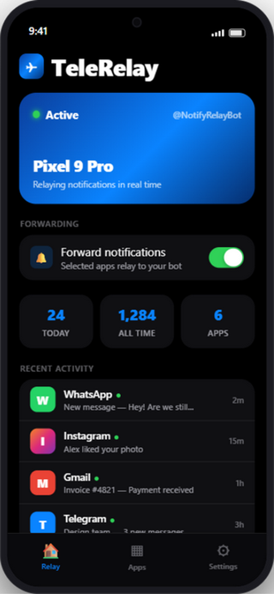
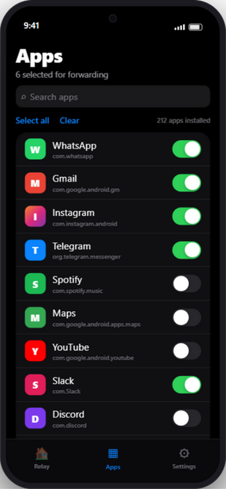
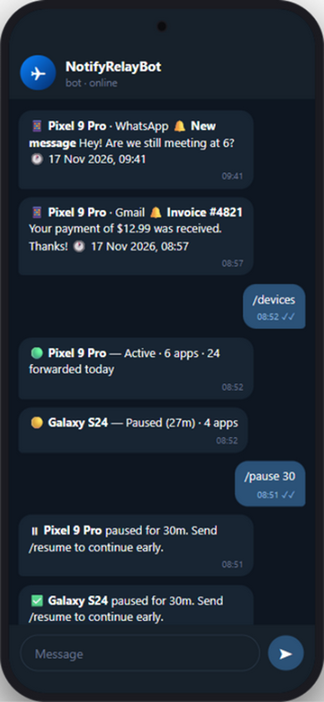
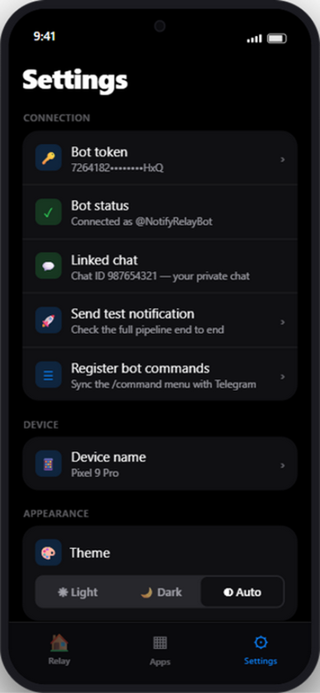

Forward Android Notifications to Telegram
TeleRelay is a free Android notification forwarder that relays alerts from the apps you choose — WhatsApp, Instagram, Gmail, banking, games — straight to your own private Telegram bot. Works across multiple phones, controlled entirely with bot commands.

Everything a Telegram notification forwarder should be
TeleRelay turns your Telegram bot into a private relay for your phone's notifications — with none of the bulk, ads or privacy trade-offs of other forwarder apps.
Forward any app's notifications
Pick exactly which apps relay — WhatsApp messages, Instagram likes, Gmail, banking alerts, order updates. Everything else stays silent.
Multi-device ready
Install on several phones with one bot token. Every message starts with the device name, so you always know which phone sent it.
13 powerful bot commands
Check device status, browse recent notifications, search history, pause forwarding, mute apps — all by chatting with your bot.
Owner-only privacy
The bot answers exclusively to your linked chat — nobody else can read your notifications or control your devices. No servers in between.
Light · Dark · Auto themes
A true-black AMOLED-friendly dark mode, a clean light mode, and automatic switching that follows your system — with iOS-inspired polish.
Feather-light & instant
Under 400 KB, no background bloat, delivery in real time via Telegram's Bot API. Built with Kotlin and Jetpack Compose.
Designed to be loved
A premium interface with springy animations, haptic feedback and a gorgeous dark theme — the way a utility app should feel.



App picker · Bot conversation · Settings — plus light & dark themes
Forwarding in under 2 minutes
No accounts, no servers, no configuration files. One bot, one app, done.
Install TeleRelay
Grab the APK from GitHub Releases, install it, and paste your token — it's verified instantly.
Link & choose apps
Send /start to your bot to link your chat, grant notification access, then toggle on the apps you want forwarded.
Control everything from Telegram
Your bot isn't just a dumb pipe. Ask it for device status, search your forwarded history, pause everything while you sleep.
🔔 New message
Hey! Are we still meeting at 6?
🕐 17 Nov, 09:41
/devicesStatus of every connected phone/appsApps being forwarded by a device/recent [app]Last forwarded notifications/search <text>Search your notification history/pause [min]Pause forwarding on all devices/resumeResume forwarding everywhere/mute <app>Stop forwarding one app/testSend a test notificationFrequently asked questions
Is TeleRelay free?
Yes — completely free and open source under the MIT license. No ads, no subscriptions, no tracking, no analytics.
Can I forward WhatsApp notifications to Telegram?
Yes. TeleRelay forwards notifications from any Android app — WhatsApp, Instagram, Gmail, Slack, banking apps, food delivery, games — you choose exactly which ones.
Can I use TeleRelay on multiple phones?
Yes. Install it on several phones with the same bot token and give each a different device name. Every message is labeled with its device, and /devices lists every connected phone with its status.
Who can see my forwarded notifications?
Only you. Notifications go to your own private bot chat, and the bot replies exclusively to the chat that sent /start. There is no intermediate server storing anything.
Does the bot really respond to commands?
Yes — 13 of them. Check devices, list apps, browse or search recent notifications, pause/resume forwarding, mute apps, send test notifications and more.
What Android version do I need?
Android 8.0 or newer (that covers ~98% of devices). The APK is under 400 KB and targets Android 15.
Start relaying notifications today
Free forever. Open source. Set up in under two minutes.
⬇ Download TeleRelay for Android